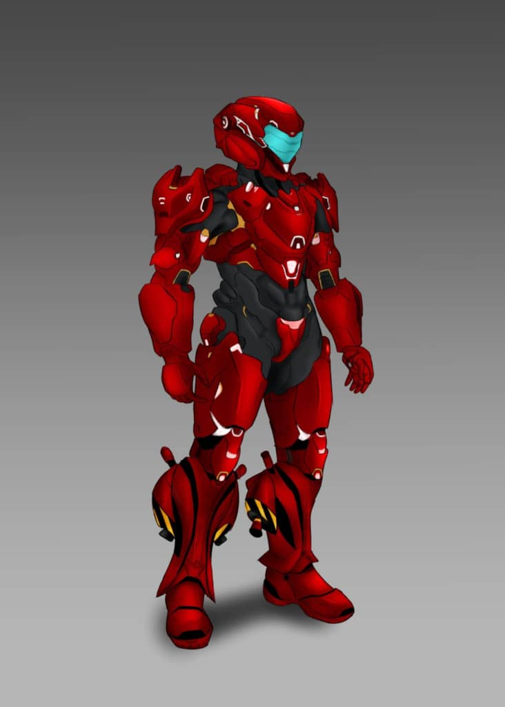

Freedom
About:
Robotic body - Freedom is a suit of armor that's made up of tungsten.
Stats:
- Age: *
- Height: 6ft
- Weight: 250lbs
- Characteristics: None
- Quirk: None
- Flaws: During combat Freedom relies on his computer.
Background:
Xander builds the Freedom suit with the help from both Roy and Luke Laster. Freedom's first flight is in the middle of the night. The finished Freedom suit was sent on a mission to wipe out weapon smugglers.